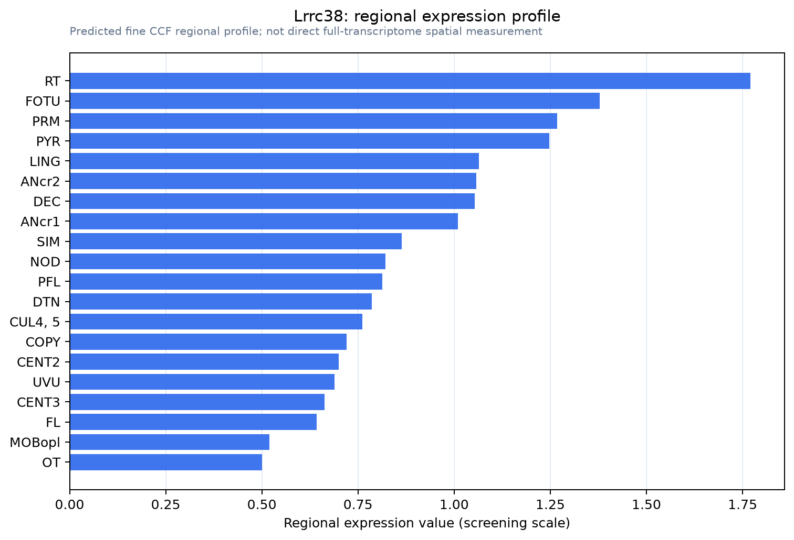

Lrrc38
Leucine-rich repeat-containing protein 38 (BK channel auxiliary gamma subunit LRRC38)
Spatial tier: RESTRICTED · Class: ION_CHANNEL · Top region: RT (Reticular nucleus of the thalamus) · Positive regions: 20/554
46.5Discovery Score
40.8Targetability Score
CEvidence grade C
What this means: Lrrc38: fine CCF profile is restricted toward RT (top regions: RT, FOTU, PRM, PYR, LING; 20 positive regions); direct spatial validation is still required.
Direct spatial evidence
MERFISH REGION LOCATOR

Regional expression figure

Predicted WMB × fine-CCF profile; not direct full-transcriptome spatial measurement.
Spatial profile
Evidence and specificity
- Evidence status
- PREDICTED_FINE
- Direct sources
- None; predicted localization only
- Exclusive threshold
- 12 positive regions out of 554
- Spatial specificity
- 0.349
- Top-region fraction
- 0.068
- Filter status
- PASS
Interpretation limits
- Cell-type-to-region projection is imputed expression, not direct spatial measurement.
- Adult reference atlases do not establish stability across age, sex, strain, state, or disease.
- Transcript abundance does not guarantee protein abundance or genetic-tool performance.